Input method smoke test. VS Code is powered by Monaco, a browser based code editor which supports IE 9/10/11, Edge, Chrome, Firefox, Safari and Opera, so when we make changes to the editor part, we should make sure it still works on all browsers Monaco support.
The golden standard is Word
Table of Contents
- [Windows/Mac] Japanese
- [Windows] Korean
- [Windows] Vietnamese with UniKey
- [Windows] Chinese
- [Windows] Sogou pinyin Chinese input method
- [Mac] Zhuyin Input Method (Chinese)
- [Linux] Japanese
- [Linux] Korean (Hangul)
- [Linux] Chinese (Pinyin)
- [Linux] Chinese (Sogou Pinyin)
[Windows/Mac] Japanese
- Add the Japanese input method
- Windows:
Settings > Time & Language > Region & language > Add a language > Japanese -
Mac:
Settings > Keyboard > Input Sources > Add a language > Japanese -
Focus VS Code and switch OS input method to Japanese and choose Hiragana:
- Windows: 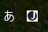
-
Mac: Choose Hiragana in the menu bar
-
Type the following words:
sennseiorkonnichihaormikannfollowed by the enter key. Here is how Word looks like doing this: sennseishould result in "せんせい" or "先生"konnichihashould result in "こんいちは"mikannshould result in "みかん" or "橘"
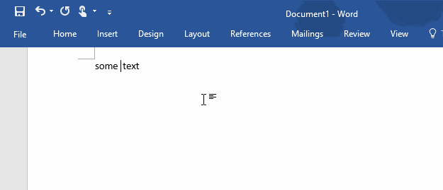
- After typing some Japanese words, try to type space or enter key a few times to see if the composition works correctly. 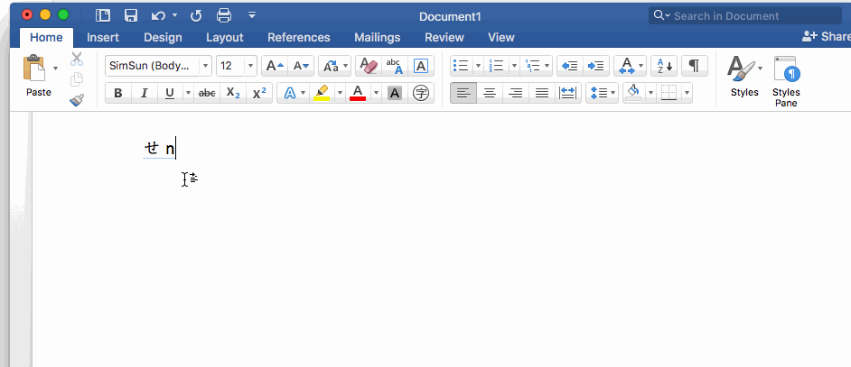
[Windows] Korean
- Add the Korean input method
-
Settings > Time & Language > Region & language > Add a language > Korean -
Focus VS Code and switch OS input method to Korean and choose Hangul:
- Type
gksrmfand press space. Here is how Word looks like doing this (it should be "한글"):
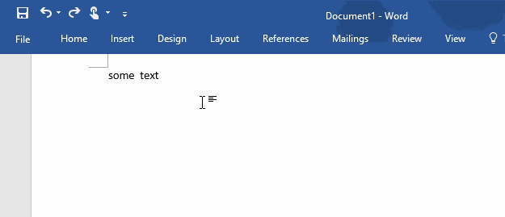
- Type
dkssudgktpdyin a new file. Here is how Word looks like doing this:
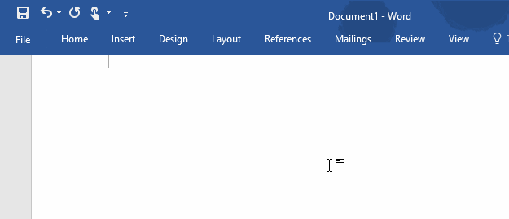
- Type
dks, it should be read안. Now backspace should result in아, backspace again should result inㅇ
[Windows] Vietnamese with UniKey
-
Download and Run UniKey
-
Click the button with a down arrow:
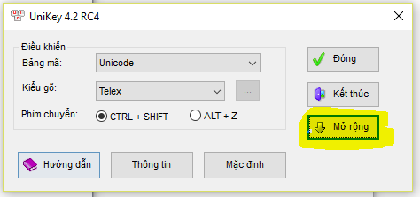
- Get the following settings:
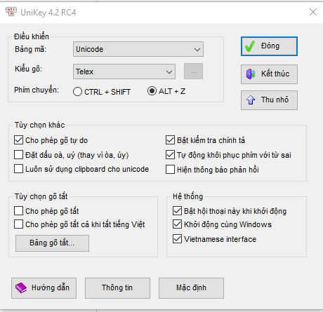
- Focus VS Code and click once UniKey's system tray entry (next to the date) to toggle on Vietnamese mode (get it to be a V):
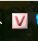
- Type
Tooi=> it should transform to => Tôi. Here is how Word looks like doing this:
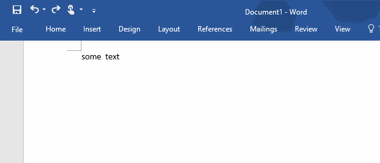
[Windows] Chinese
- Add the Chinese (Simplified) input method
-
Settings > Time & Language > Region & language > Add a language > Chinese (Simplified) -
Focus VS Code and switch OS input method to Chinese and choose Chinese mode and make sure the input method's name is Microsoft Pinyin:
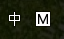
- Type
.or,in full width form. They should be typed in immediately. Here is how Word looks like doing this:
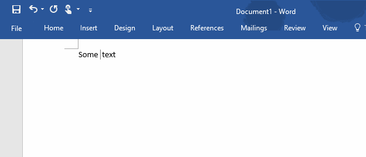
- Type
nipressSpaceand thenhaoand pressSpace. They should be typed in immediately. Here is how Word looks like doing this:
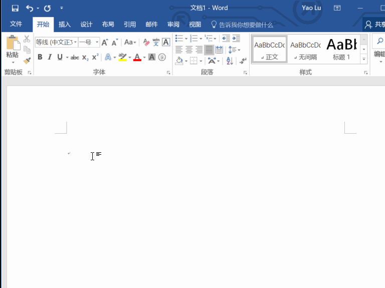
-
Type
haznipressSpace. It should result into哈祝你or汉子or哈子你. The result might differ due to different implementation of the algorithm the IME uses, just make sure it's the same as what you get in Notepad or whatever. -
Type
aand press space key twice. The result should be啊(Please note it ends with a single space)。
--
[Windows] Sogou pinyin Chinese input method
-
Install Sogou pinyin Chinese input method
-
Download Sogou pinyin Chinese input method from this link
-
Double click downloaded install exe
-
Click YES if UAC dialog show
-
Click Install immediately in the install UI
-
Wait for the process complete, UNCHECK the "install the Sogou browser"
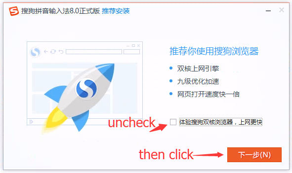
-
Uncheck all options, click finish
-
Focus VS Code and switch OS input method to Chinese and choose Chinese mode and make sure the input method's name is Sogou Pinyin:
- Type
nipressSpaceand thenhaoand pressSpace. They should be typed in immediately. Here is how Word looks like doing this:
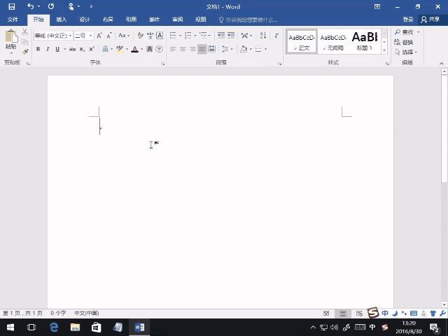
- It should result into
你好
[Mac] Zhuyin Input Method (Chinese)
System Preferences > Keyboard > Input Sources > Add > Chinese, Tranditional > Zhuyin
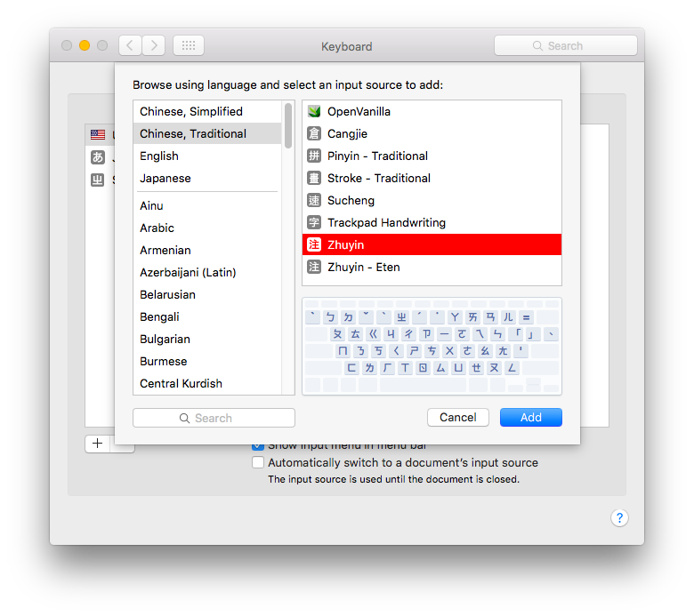
- Focus VS Code and switch OS input method to Zhuyin (press Command + space)
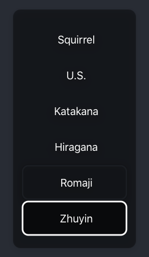
- Type
su3cl3and press Enter. Here is how World looks like doing this (It should be "你好")
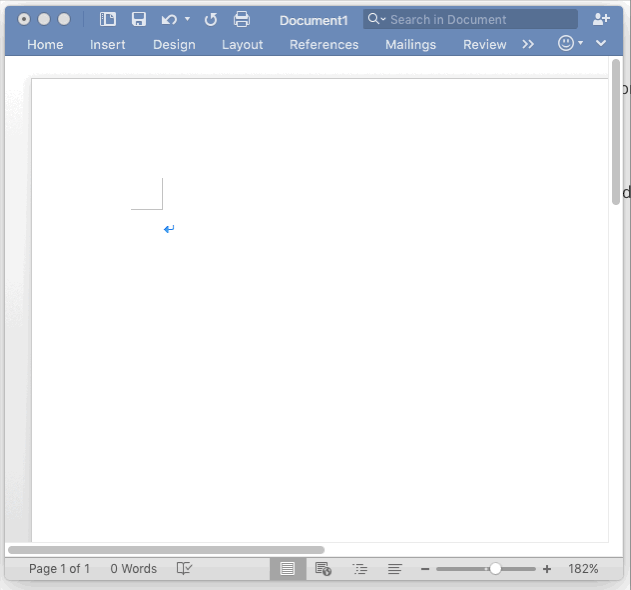
[Mac] The hold input method
- Long press
e - A pop-up should appear
- Choose a different variant, like an
ewith an accute accent
[Mac] The emoji inserter
[Linux] Japanese
Use mozc.
Ubuntu
Follow this guide, from the Mozc section:
sudo apt-get install ibus-mozcSystem Settings > Text Entry, addJapanese (Mozc)(IBus)to the list- In the system menu bar, switch the input language to Mozc and the input mode to Hiragana
Elementary OS
http://elementaryos.stackexchange.com/questions/271/how-can-i-enable-japanese-input
Test
| Input | Output |
|---|---|
sennsei |
"せんせい" or "先生" |
konnichiha |
"こんいちは" |
mikann |
"みかん" or "橘" |
[Linux] Korean
Ubuntu
- Follow this guide to install and setup fcitx.
Elementary OS
- Install fcitx: Follow instructions here
- Install Korean-Hangul support:
sudo apt-get install fcitx-hangul
Test
| Input | Output |
|---|---|
gksrmf |
"한글" |
[Linux] Chinese (Pinyin)
Ubuntu
- Follow this guide to install and setup fcitx.
Elementary OS
- Install fcitx: Follow instructions here
- Select Google Pinyin
Test
| Input | Output |
|---|---|
ni Space hao Space |
"你好" |
[Linux] Chinese (Sogou Pinyin)
- Install fcitx as above
- Install the deb images (32/64 bit) from http://pinyin.sogou.com/linux/?r=pinyin
Test
| Input | Output |
|---|---|
ni Space hao Space |
"你好" |
Content created from: * #1168 * #2250 * #2374 * #5615 * #7997 * #10937